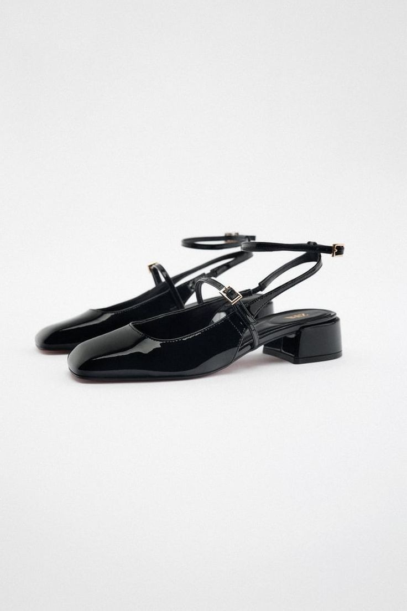
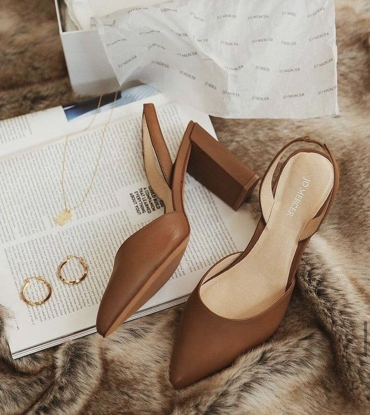
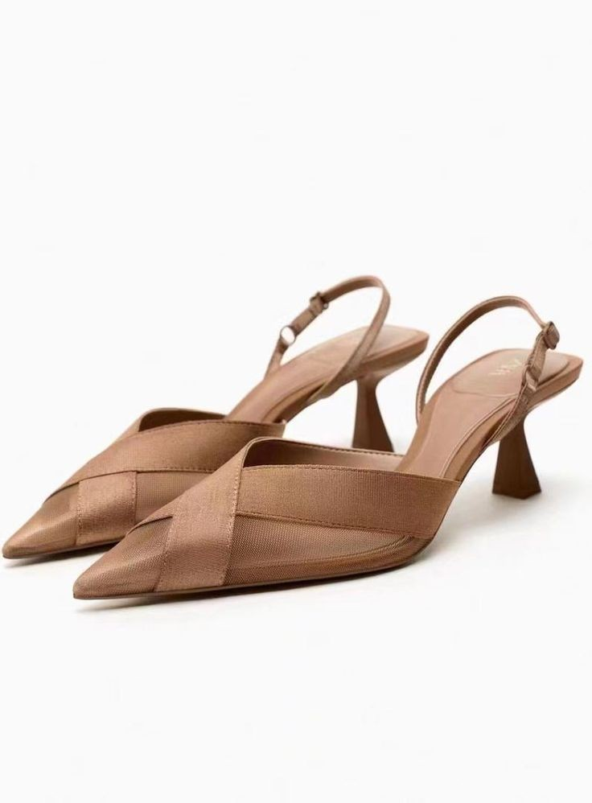
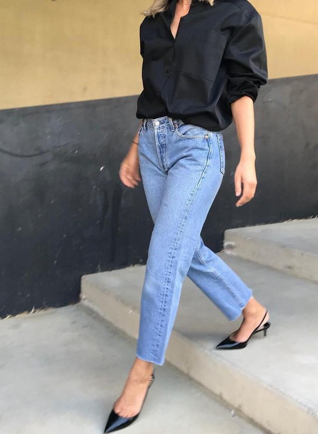
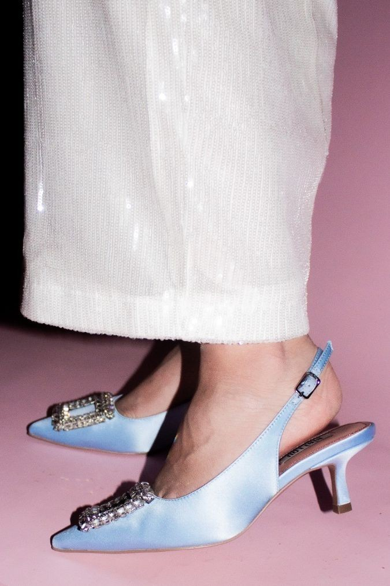

About Court Heels
Understanding the elegance and versatility of court heels.
What Are Court Heels?
Court heels, also known as pumps, are a type of shoe characterized by their low-cut front and typically a heel height of 2 to 3 inches. They are known for their simplicity, elegance, and comfort, making them a staple in both professional and casual wardrobes.
Types of Court Heels



Styling Tips

